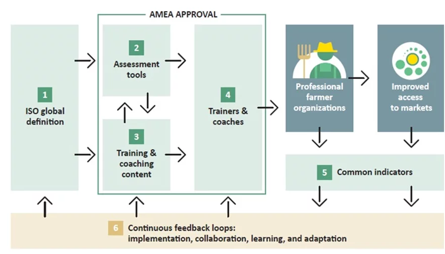

It is difficult to build vibrant and stable market systems without vibrant and stable supply chains. We believe that vibrant and stable smallholder supply chains can only be realized by building entrepreneurial farmer organizations that are run as professional businesses. The Shirika program is a world-class localized program that was designed to do exactly that! The program is offered in partnership with SCOPEInsight and IFC.
The ALP program (Shirika is our localized edition) follows this AMEA framework for professionalizing farmer organizations:
Africa Turnaround Limited is a licensed implementer of the SCOPE assessment methodology and an approved implementer of IFC's Agribusiness Leadership Program (ALP). The program comprises of 4 key components: 1) Assessment, 2) Training, 3) Coaching, and 4) Linkages. We already have a pool of trained and certified SCOPE assessors and have been involved in undertaking SCOPE assessments and designing and executing SCOPE aligned capacity building interventions for some of the biggest organizations in the region.
The program takes a 5 step process:
Step 1: Conduct assessments
Our SCOPE trained and certified assessors conduct baseline assessments of POs using the SCOPE methodology. In parallel, we carry out a training needs assessment (TNA) by talking to the client, POs, smallholders, and others in the value chain. Determine their goals and needs.
Step 2: Create a strategy for the client
We then use TNA and baseline results to create a capacity building strategy. Provide training and coaching recommendations for POs and define how to build the capacity of local professionals to deliver the program.
Step 3: Build + deliver the program
We then build a customized training and coaching program that responds to TNA and assessment results. Our IFC trained trainers conduct the training. Trainers walk into the classroom with detailed knowledge of the participant’s strengths and weaknesses. The participants create a development plan that address performance gaps identified during the assessment. After the training, the organization is paired with a trained coach who supports the leaders as they complete their development plan and identify opportunities to apply what they learned during training.
Step 4: Conduct reassessments
After training and coaching, the assessors conduct reassessments of POs using the same SCOPE tools as in Step 1. Compare baseline and reassessment scores to measure program effectiveness.
Step 5: Create market linkages
Finally, we facilitate market linkages for POs that raise their assessment scores. POs finish ALP with everything they need to create a business plan and achieve commercial results, such as financing and new business.